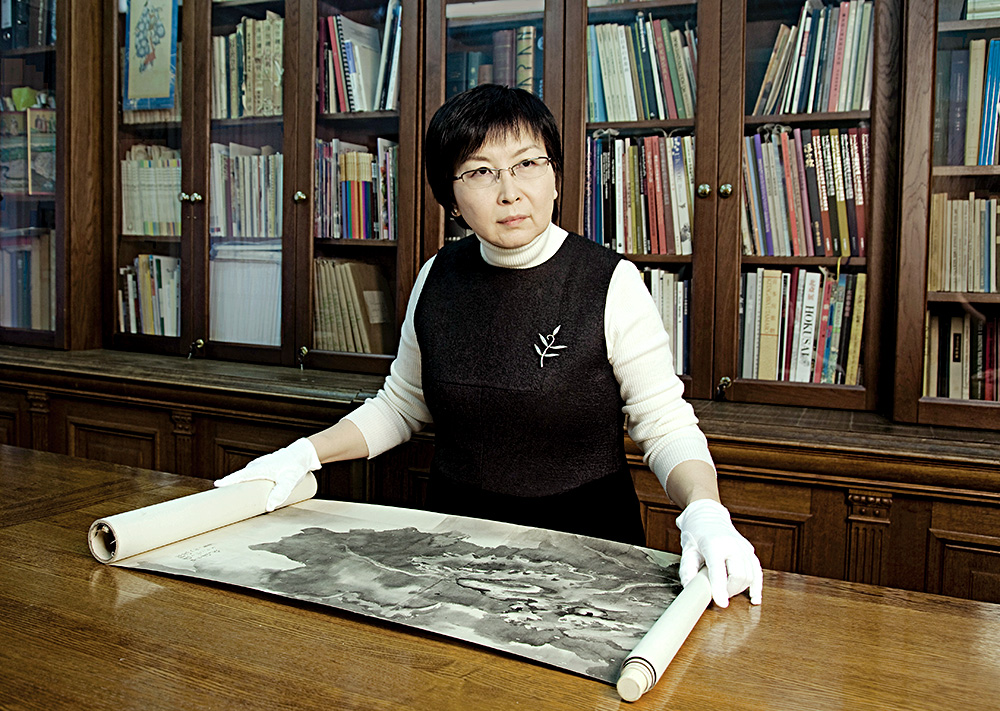
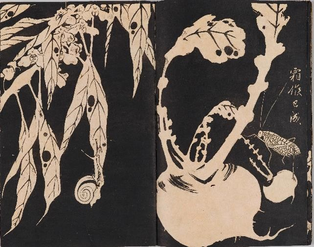
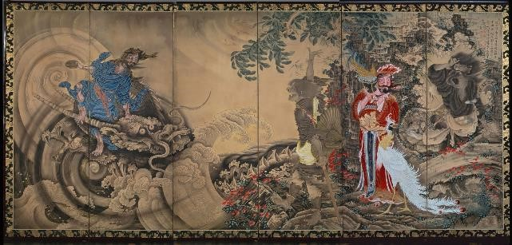
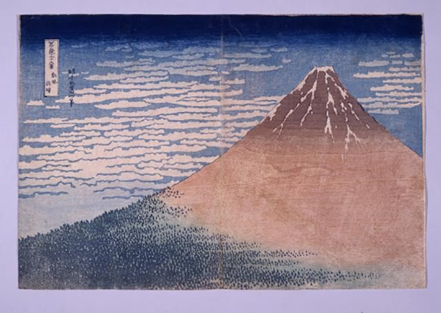

Стартовал год культурных обменов России и Японии, включающий более 300 мероприятий. Главной выставкой в нашей стране станет «Шедевры живописи и гравюры эпохи Эдо» в ГМИИ им. А.С.Пушкина. Об уникальной экспозиции рассказала ее куратор Айнура Юсупова
Насколько предстоящая выставка выдающееся событие?
Это очень редкая возможность. Таких выставок было очень мало, последние состоялись около 30 лет назад. В декабре 2016 года главы России и Японии договорились о проведении перекрестного Года Японии — России. Это первое событие такого рода за всю историю наших дипломатических отношений, в ознаменование которого было решено организовать значительную художественную акцию.
В чем ее уникальность и почему выставка будет состоять из двух частей?
В ГМИИ из Японии привезут особо ценные предметы искусства, которые крайне редко покидают пределы этой страны. Прежде всего это связано с деликатностью материала и строгими условиями транспортировки, хранения и экспонирования, ведь это живопись на бумаге и шелке. Если эти произведения выставлять в течение месяца, то потом они должны «отдыхать» в течение года. Поэтому сроки их предоставления на выставки расписаны на годы вперед. Большая удача, что Токийский национальный музей и Агентство по культуре Японии, у которого есть собственная очень ценная коллекция, согласились быть нашими партнерами, благодаря чему на выставке можно будет увидеть первоклассные вещи. В проекте также участвуют Художественный музей города Тиба и Художественный музей Итабаси (Токио), обладающие редкими коллекциями искусства эпохи Эдо. Важно отметить, что колоссальные расходы по подготовке выставки взял на себя наш спонсор — компания «Роснефть».
Согласно строгим японским стандартам экспонирования произведения живописи на шелке и бумаге нельзя демонстрировать более четырех недель, поэтому в середине работы выставки экспозиция будет полностью заменена. Фактически мы делаем две выставки. В сентябре и октябре зрители увидят совершенно разные произведения. Сложность состоит в том, что вещи из первой части выставки нужно заменить на произведения такого же высокого художественного качества. Мы начали работать над составом выставки поздно, всего полтора года назад, а большинство произведений подобного уровня заказывают на выставку за три-четыре года. Было невероятно трудно подбирать ширмы, свитки и гравюры так, чтобы вторая половина экспозиции по значимости не уступала первой. Это будут две равные части: работе конкретного художника придет на замену другая работа этого же художника. Что касается ширмы с изображением Киото и окрестностей, которая состоит из двух частей, то на выставке будет представлена сначала одна ее часть, а потом другая.
Два произведения на выставке имеют статус национального сокровища Японии. Что это за вещи?
Статус национального сокровища имеют два произведения из Токийского национального музея. Первое — двустворчатая ширма «Наслаждение вечерней прохладой» кисти Кусуми Морикагэ (1620–1690), монохромная живопись с изображением семейной пары на террасе. Это очень тонкая, деликатная живопись тушью с жанровой сценой. Работ художника сохранилось не так много, в собраниях российских музеев они не представлены вовсе.
Второе — свиток с портретом Таками Сэнсэки кисти художника Ватанабэ Кадзана (1793–1841). Хотя произведение выполнено в форме традиционной японской живописи на свитке, здесь заметно влияние европейского искусства, использованы европейские приемы живописи, в том числе светотеневая моделировка; художник стремился передать не только черты конкретного человека, но и дать его психологическую характеристику. Это произведение заметно отличается от других картин, которые будут представлены на выставке. Японцы очень бережно относятся к этой работе, около двух лет назад она была отреставрирована на средства влиятельного американского банка.
Кроме того, еще несколько произведений имеют специальные статусы — «особо ценный объект культуры» и «особо ценный предмет искусства»; всего таких экспонатов будет 17.
На какие произведения стоит обратить особое внимание?
Для нас будет открытием появление так называемых художников-эксцентриков, в частности Сога Сёхаку (1730–1781) и Ито Дзякутю (1716–1800). Их не случайно называют эксцентриками: эти авторы не принадлежали к основным художественным школам того времени. В частности, мы покажем великолепную ширму «Даосские бессмертные» кисти Сога Сёхаку из собрания Агентства по культуре Японии.
Имя Ито Дзякутю широкая публика узнала не так давно, в 2000-х годах, до этого он был известен в Японии только специалистам. В этом году в Париже пройдет представительная выставка художника, поэтому получить его работы в наш музей оказалось почти невозможно. Однако один из японских коллекционеров любезно предоставил нам четыре свитка Ито Дзякутю, благодаря чему мы сможем впервые показать его работы в России. Творчество этого художника было разнообразным, он работал в разных манерах, у нас же будут представлены монохромные свитки (его полихромные работы крайне редки).
Еще на выставке можно будет увидеть ширму «Осенние и летние травы» кисти Сакаи Хоицу (1761–1828), одно из самых известных произведений школы Римпа, которое часто украшает обложки книг по истории искусства Японии.
Искусство перестало быть уделом аристократии?
В предшествующий период религиозные памятники хранились в монастырях и храмах, а светское искусство было аристократическим: в эпоху Хэйан оно развивалось в основном в императорском кругу; в эпоху Камакура оно существовало и при дворе, и среди знатного воинского сословия; так же было в эпоху Адзути-Момояма. А во времена Эдо заказывать предметы искусства могли позволить себе и богатые купцы, и горожане. Этому способствовало развитие книгопечатания и гравюры на дереве — то, что называют искусством «укиё-э». Изменилась тематика. Если в предшествующие периоды она была связана с классическими трактатами, то с развитием книгопечатания появилась городская литература, адаптации классических произведений. Государство проводило реформы, связанные с внедрением конфуцианских ценностей: строгой иерархии, подчинения младших старшим, низших высшим. Китайские трактаты не только переводили на японский язык, но и адаптировали.
В это же время развивалась система «санкин котай»: правители клана Токугава требовали, чтобы главы отдаленных княжеств непременно присутствовали в столице, где они должны были жить в течение года с интервалом в год. При этом их семьи оставались заложниками в княжествах — это было гарантией того, что они не готовят заговоры. Город Эдо стал мегаполисом с многомиллионным населением: самураи приезжали в столицу со своей свитой. Путешествие туда и обратно становилось важным событием, множество гравюр и свитков изображают эти грандиозные процессии. Естественно, такое количество людей, приезжавших на службу, нуждалось в развитой инфраструктуре. Так формировалась городская среда, точками притяжения в которой становились возникший в это время театр кабуки, веселые кварталы, выступления борцов сумо. Все эти темы находили отражение в укиё-э.
Укиё-э — это только цветная гравюра?
Не только. Укиё-э включает в себя живопись на свитках и ширмах, которая появилась в более ранний период. Но живопись уже тогда была дорогим искусством, поэтому именно гравюра на дереве сделала искусство укиё-э доступным. Центром книгопечатания изначально были Киото и Осака, а основные художественные школы сосредоточились в Киото, в том числе главенствовавшая в то время школа Кано, основными заказчиками которой были знатные самураи, жившие в этом городе. Однако, когда город Эдо стал центром политической и культурной жизни, туда же перебрались художники и книгопечатники. Уже тогда в Эдо появилось собственное направление школ Кано и Тоса. В киотском направлении доминировали жесткие каноны, а в Эдо художники разных школ оказывали влияние друг на друга.
Когда японская живопись начала проникать в Россию и насколько она известна у нас в стране?
Основные коллекции японского искусства формировались в конце XIX — начале XX века. Уже в эпоху Мэйдзи (1868–1912), когда Япония переживала экономические трудности, многие выдающиеся произведения искусства были вывезены в Америку и Европу. Пожалуй, единственным русским коллекционером, который мог себе позволить собирать японское искусство в Японии, был Сергей Николаевич Китаев (1864–1927), чья коллекция находится в собрании нашего музея. Остальные русские коллекционеры покупали в основном через европейский рынок. По сравнению с американскими и европейскими коллекциями японского искусства в российских собраниях очень мало живописи на ширмах и свитках, и даже в коллекции Китаева живопись составляет примерно пятую часть. Все в то время собирали гравюру — может быть, потому, что она была дешевой и доступной. Известно, что Винсент ван Гог собирал японскую гравюру, хотя жил очень бедно. (Надо сказать, что многие частные американские коллекции пополнились прекрасными памятниками японского искусства и после Второй мировой войны, в период тяжелейшего кризиса в Японии.) Таким образом, в российских собраниях оказалось много гравюр укиё-э, но очень мало живописных произведений, они есть в Государственном Эрмитаже, ГМИИ им. А.С.Пушкина, Государственном музее искусства народов Востока. К сожалению, ни в одной из этих коллекций японское искусство не представлено с достаточной полнотой, позволяющей показать историю искусства Японии или даже отдельно взятой эпохи Эдо.
Автор: Дарья Палаткина15 АВГУСТА